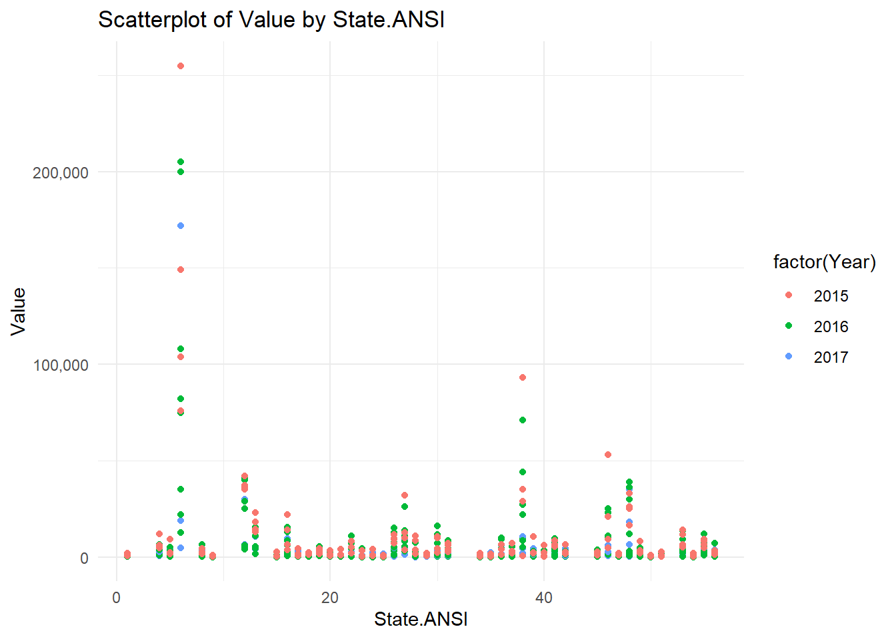
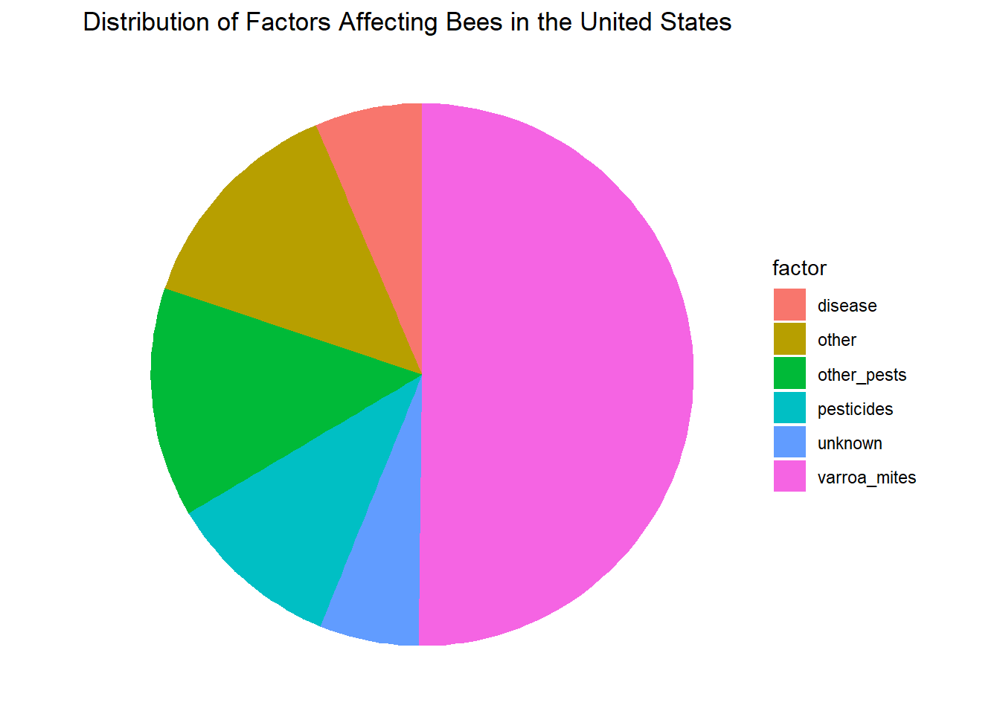
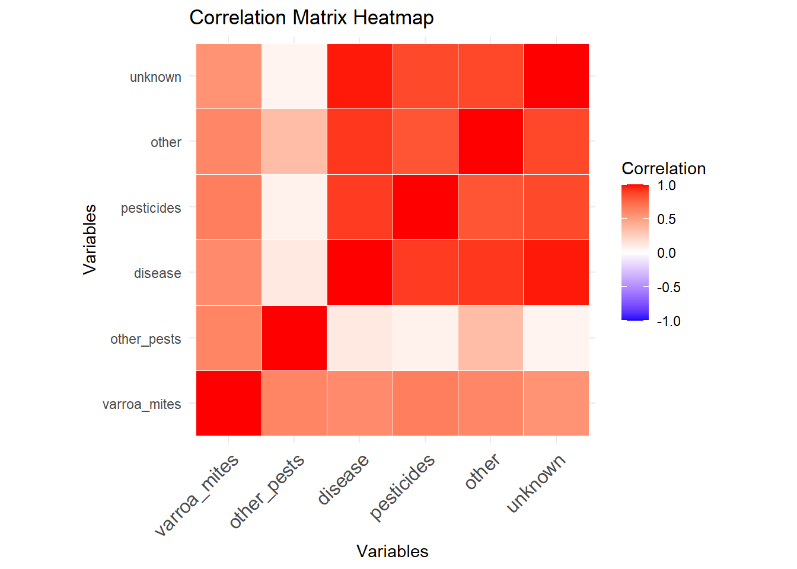
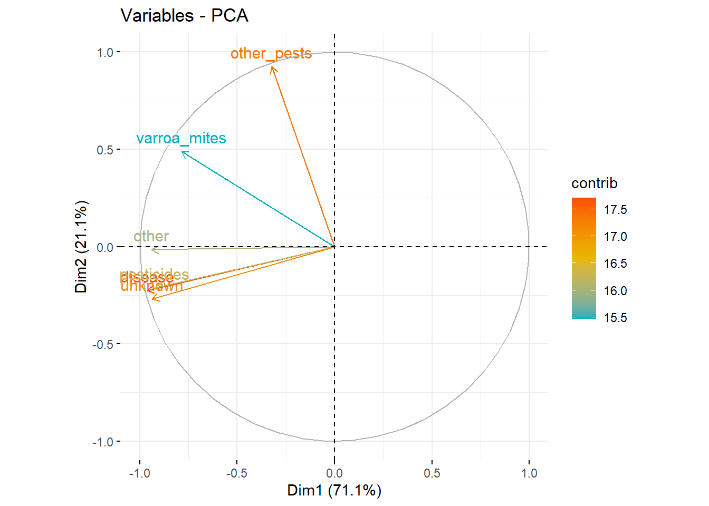

Group 10 Final Project
Summary/Abstract
Group Ten is conducting a comprehensive analysis of historical data from various public agencies to evaluate the impact of Varroa mites, American Foulbrood, and global warming on hive losses in the United States.This research utilizes extensive datasets from the National Agricultural Statistics Service, the Agricultural Statistics Board, and the United States Department of Agriculture (USDA), encompassing multiple years of data. The data highlights the topic on hive losses attributed to mites, bacterial infections, and environmental factors related to global warming. Through advanced data visualization techniques in R, we aim to demonstrate and validate the detrimental effects of these factors on honeybee colonies, highlighting the consequent implications for honey production and broader food security. Dennis and Kemp’s study on honey bee hive collapse [@hivecollapse] provides important insights into Allee effects and ecological resilience.
Introduction
Honeybees have served as nature’s pollinators for centuries. With their relationship with humans documented as far back as ancient Egyptian and Hindu cultures. Historically, humans have maintained beehives and utilized honey for its medicinal properties in various civilizations, including the Egyptians, Assyrians, Chinese, Greeks, and Romans. Honey’s natural antibacterial qualities made it a valuable treatment for wounds. This was a practice continued by Romans and Russians during World War I. Honeybees and other pollinators are essential for food production and nutritional security. But even though they face numerous survival challenges Varroa mites pose a significant threat to bee colonies. These tiny red-brown parasites live on adult honeybees and reproduce on larvae and pupae. Another major threat is American Foulbrood Disease (AFB). This is caused by the bacterium Paenibacillus larvae, which is fatal to honeybee larvae and requires incineration of infected hives to prevent its spread. The impact of climate change on honeybee colony losses is a growing area of research. While correlations have been found between higher winter temperatures and increased colony losses, the effects of warmer autumn and winter temperatures on colony dynamics and survival require further investigation. Dennis and Kemp’s study on honey bee hive collapse [@hivecollapse] provides important insights into Allee effects and ecological resilience.[@usda_honey_bees; @usda_nass]
Composition of Honey
Compositions of honey is a pie chart that illustrates the composition of honey by percentage. The main components are:
- Fructose: 38.5%
- Glucose: 31%
- Water: 17.1%
- Maltose: 7.2%
- Other components:
- Sucrose: 1.5%
- Minerals, Vitamins, Enzymes: 0.5%
- Trisaccharides, Carbohydrates: 4.2%
This composition indicates that honey is primarily made up of sugars, specifically fructose and glucose, with water being the third major component. The presence of minerals, vitamins, and enzymes, though in smaller amounts, adds nutritional value to honey. This detailed breakdown underscores honey’s role as a natural sweetener with additional health benefits beyond its primary carbohydrate content.

Spread of Varroa Mites
the spread of varroa mites image is a map illustrating the spread of Varroa mites in the United States from 1986 to 1995. The map uses different colors to represent the year of the first appearance of Varroa mites in each state:
- 1986 - 1987: Red
- 1988 - 1989: Yellow
- 1990 - 1991: Green
- 1992 - 1993: Blue
- 1994 - 1995: Grey
- NA: States where data is not available
The map reveals the progressive spread of Varroa mites from the mid-1980s to the mid-1990s, affecting bee colonies across the country. The earliest appearances were concentrated in specific regions and gradually spread to more states over time. This visual representation highlights the increasing geographical distribution of Varroa mites and underscores the growing challenge they pose to beekeeping and agricultural industries in the United States.
[@varroamap] Varroa Map of infestation periods

The chart provided illustrates the changes in temperature anomalies over the years, from 1900 to approximately 2025. The temperature anomaly, measured in degrees Celsius (°C), is plotted on the y-axis, while the years are plotted on the x-axis. The data is divided into three different measurements: Earth’s surface, lower troposphere (RSS), and lower troposphere (UAH), each represented by different colors (blue, red, and green respectively).
Detailed Description:
- Trend Analysis:
- From 1900 to around 1975, the Earth’s surface temperature shows considerable variability with some notable periods of cooling and warming.
- Post-1975, there is a distinct upward trend in temperature anomalies for all three measurements, indicating a general warming trend.
- Measurement Comparison:
- The Earth’s surface (blue line) shows the most extended historical data and fluctuates more in the earlier years compared to the troposphere measurements.
- The lower troposphere measurements (RSS in red and UAH in green) start around 1975 and generally follow the same upward trend as the surface measurements but with less variability.
- The RSS and UAH measurements align closely with each other post-2000, indicating consistent trends in the lower troposphere temperature anomalies.
- Anomalies & Peaks:
- The Earth’s surface shows significant peaks and troughs, especially in the early 20th century and around the year 2000.
- The lower troposphere measurements show peaks and align closely, particularly after the year 2000, reflecting similar patterns in temperature anomalies.
Key Points:
- The overall trend shows an increase in temperature anomalies from 1900 to 2025.
- Significant variability is seen in Earth’s surface temperatures in the early years.
- Post-1975, a clear warming trend is observed across all measurements.
- Lower troposphere data (RSS and UAH) begins around 1975 and follows the Earth’s surface trend with less variability.
- Post-2000, the RSS and UAH data closely align, indicating consistent temperature trends in the lower troposphere.
- There are noticeable peaks in the temperature anomalies around the year 2000 and later, reflecting periods of significant temperature increases.
Impact on Bees, Varroa Mites, and Colony Loss:
- Bees:
- Thermal Stress: Increased temperature anomalies can cause thermal stress on bees, affecting their ability to forage, navigate, and perform essential colony tasks.
- Floral Resources: Warming temperatures can alter the availability and distribution of floral resources, impacting bee nutrition and health.
- Reproduction Cycles: Changes in temperature can disrupt the reproductive cycles of bees, potentially leading to mismatches with the availability of pollen and nectar.
- Varroa Mites:
- Increased Reproduction: Warmer temperatures can accelerate the reproduction rates of varroa mites, exacerbating infestations within bee colonies.
- Extended Activity Period: Higher temperatures can lengthen the active period of varroa mites throughout the year, leading to prolonged periods of stress on bee populations.
- Colony Loss:
- Health Decline: Combined effects of thermal stress on bees and increased varroa mite infestations can lead to a decline in colony health.
- Colony Collapse Disorder (CCD): Temperature anomalies can contribute to conditions that favor Colony Collapse Disorder, where the majority of worker bees disappear, leaving behind the queen and immature bees.
- Mortality Rates: Sustained temperature increases can lead to higher mortality rates within bee colonies, significantly impacting beekeeping and agricultural pollination services.
Conclusion:
The chart highlights a clear trend of increasing temperature anomalies, which can have profound implications on bee populations, varroa mite dynamics, and overall colony health. Understanding these trends is crucial for developing strategies to mitigate the adverse effects on bees and ensure the sustainability of pollination services essential for ecosystems and agriculture.
[@epa_climate_indicator] Global warming trends from 1900-2024
Spread of Varroa Mite by Year of First Apperance [@varroamap] Written By:sdns6mchl4. (2016, February 24). Varroa mite spread in the United States. Beesource Beekeeping Forums. https://www.beesource.com/threads/varroa-mite-spread-in-the-united-states.365462/
## General Background Information
Uncapped Honey Floresville,Texas Hive

Capped Honey one Month Later same hive frame- Italian bees Floresville, Texas

Description of data and data source
Data Sources
Bee colonies maintained by beekeepers are classified as livestock by the USDA due to their production of honey, a consumable food item, and their critical role in pollination during crop seasons. Given the importance of bee colonies in agriculture, we sourced data from two authoritative websites:
- USDA National Agricultural Statistics Service (NASS):
- Provides comprehensive agricultural data, including statistics on honey production and colony health.
- Source: USDA - National Agricultural Statistics Service - Surveys - honey bee surveys and reports.
- Bee Informed Partnership:
- Offers detailed insights and research on bee colony management and health, contributing valuable information on the status and trends of bee populations.
- Source: Index Catalog // USDA Economics, Statistics and Market Information System.
These sources provided reliable and extensive data necessary for analyzing the factors affecting bee colonies, honey production, and the broader implications for agriculture.
Questions/Hypotheses to be addressed
Hypotheses
Hypothesis: “The negative impacts of mites, bacterium, and global warming have detrimental effects on honeybee colonies in the United States and Texas, which in turn will lead to a decline in honey production and negatively impact food production.” This hypothesis can be tested and validated through a visualization of outcomes using R, demonstrating the relationship between these factors and their effects on honeybee colonies.
Null Hypothesis (H0): The impacts of mites, bacterium, and global warming do not have a significant detrimental effect on honeybee colonies in the United States and Texas, and there is no consequent decline in honey production or negative impact on food production.
Alternative Hypothesis (H1): The impacts of mites, bacterium, and global warming have a significant detrimental effect on honeybee colonies in the United States and Texas, leading to a decline in honey production and negatively impacting food production.
These hypotheses will be tested using various data visualization techniques in R, allowing us to explore and validate the relationships between these factors and their effects on honeybee colonies.
Bacterium Infection Foul Brood

Dead bees resulting from extreme heat found in hive

#Citation section To cite other work (important everywhere, but likely happens first in introduction), make sure your references are in the bibtex file specified in the YAML header above and have the right bibtex key. Then you can include like this:
Examples of reproducible research projects can for instance be found in [@mckay2020; @mckay2020a].
#Here are the BibTex entries for citations:
Using this in RMarkdown: #Make sure to save these entries in a file names’reference.bib’ and include it in your R Markdown document like this:
Methodology
Schematic of workflow
Data aquisition
Data Acquisition
We sourced our data from the United States Department of Agriculture (USDA), leveraging their comprehensive and authoritative datasets. This data provided crucial information for our analysis, including statistics on honey production, colony health, and factors affecting bee populations. Utilizing USDA data ensured the reliability and relevance of our analysis, as it encompasses extensive, well-documented records pertinent to agricultural and ecological studies.
Data import and cleaning
Data Cleaning and Preparation
We integrated data from multiple datasets to ensure a comprehensive analysis. The cleaning process involved several key steps:
- Removal of Irrelevant Data:
- Blank Spaces: We eliminated any blank spaces within the datasets to ensure data integrity.
- Non-Pertinent Columns: Columns that were not directly related to our analysis objectives were removed to streamline the dataset.
- Filtering Observations:
- Focus on Relevant Data: We filtered out observations that did not directly pertain to our study, specifically those not related to the causes of bee colony losses.
- Loss Data: The dataset was refined to single out data representing the losses attributed to mites and climate change, allowing us to focus on these critical factors.
- Exploratory Focus:
- State and Year Analysis: By focusing on data that represented colony losses across different states and years, we aimed to explore the geographical and temporal impacts of these factors on bee colonies.
These steps ensured that our dataset was clean, relevant, and well-prepared for subsequent analysis, enabling a focused exploration of the causes of bee colony losses and their relationship with mites and climate change.

Analysis of Boxplot
The boxplot illustrates the distribution of values for “LOSS, COLONY COLLAPSE DISORDER” and “LOSS, DEADOUT” across the years 2015 to 2017. A few key observations can be made from the data:
Central Tendency and Spread: - The median values for both types of losses (represented by the central line in each box) are relatively low across all years, indicating that the majority of losses are concentrated towards the lower end of the scale.
Yearly Comparison: - For the year 2015, the losses due to Colony Collapse Disorder and Deadout are higher compared to the subsequent years. This can be observed from the height of the boxes and the spread of the data points. - There is a noticeable decrease in the losses for both categories in 2016 and 2017. The boxes for these years are smaller and closer to the x-axis, indicating lower values.
Outliers: - There are significant outliers present in all years for both types of losses. These outliers indicate that while most of the data points are clustered around the lower values, there are instances of very high losses that deviate from the norm.
Comparison between Loss Types: - The distribution of “LOSS, DEADOUT” appears to have more variability compared to “LOSS, COLONY COLLAPSE DISORDER”, particularly in 2015 and 2016. This is indicated by the wider interquartile ranges and more spread out data points.
Overall Trends: - Overall, the boxplot suggests a decline in both types of losses from 2015 to 2017. However, the presence of outliers in each year indicates that there are still occasional severe loss events.
This highlights the trends and variations in honeybee colony losses due to Colony Collapse Disorder and Deadout over a three-year period, providing insights into the distribution and severity of these losses.
Analysis of Scatterplot
The scatterplot visualizes the distribution of values across different states (represented by State ANSI codes) for the years 2015, 2016, and 2017. Several key observations can be drawn from the data:
Value Distribution Across States: - The values vary significantly across different states. Most states have relatively low values, but there are notable exceptions with very high values.
Yearly Trends: - In 2015, there are multiple high values, especially at the lower end of the State ANSI codes. These are represented by the red dots. - In 2016, represented by green dots, there are fewer high values, but some extreme outliers are present, such as the one exceeding 200,000. - In 2017, indicated by blue dots, the values are generally lower compared to the previous years, with fewer extreme outliers.
Outliers: - Each year has significant outliers that deviate from the general trend of low values across states. These outliers suggest occasional severe losses in specific states.
State-Specific Trends: - Certain states (e.g., those with lower ANSI codes) exhibit higher variability and more frequent high values compared to others. - States towards the middle and higher end of the ANSI scale generally show more consistent, lower values.
Comparative Analysis: - The plot indicates that while overall losses may be high in certain states, the distribution and frequency of these high values vary across years. This suggests possible changes in factors affecting bee colony losses over time.
This shows the distribution and variability of bee colony losses across different states over three years, providing insights into state-specific trends and the presence of extreme loss events.

Analysis of Boxplot
The boxplot illustrates the distribution of values for “LOSS, COLONY COLLAPSE DISORDER” and “LOSS, DEADOUT” across different periods of the year. The data is segmented into four periods: APR-THRU-JUN, JAN-THRU-MAR, JUL-THRU-SEP, and OCT-THRU-DEC. Several key observations can be made from the data:
Central Tendency and Spread: - The median values for both types of losses are low across all periods, indicating that most losses are concentrated towards the lower end of the scale. - The interquartile ranges (IQRs) for “LOSS, DEADOUT” are relatively consistent across periods, suggesting stable variability in losses throughout the year.
Period Comparison: - The period JUL-THRU-SEP shows the highest median value for “LOSS, DEADOUT,” indicating that this period might be particularly challenging for bee colonies. - The period JAN-THRU-MAR has a few outliers but generally shows lower losses compared to other periods.
Outliers: - Significant outliers are present in all periods for both types of losses. These outliers suggest occasional severe loss events that deviate significantly from the norm. - The period APR-THRU-JUN shows the highest outlier for “LOSS, COLONY COLLAPSE DISORDER,” indicating some extreme events during this time.
Comparison between Loss Types: - “LOSS, DEADOUT” consistently shows a wider range of values compared to “LOSS, COLONY COLLAPSE DISORDER” across all periods, suggesting more variability in deadout losses.
Overall Trends: - The plot suggests that while losses occur throughout the year, there are specific periods (e.g., JUL-THRU-SEP) where losses might be higher. - The consistent presence of outliers indicates that, despite general trends, extreme loss events are a recurring issue.
This boxplot shows insights into the seasonal variability of bee colony losses due to Colony Collapse Disorder and Deadout, highlighting specific periods with higher losses and the presence of extreme loss events.
Overall Analysis
- The composition of honey indicates its high sugar content, essential for energy but also highlighting the presence of beneficial components like enzymes and vitamins.
- The spread of Varroa mites map highlights the widespread and growing impact of these pests over time, emphasizing the need for ongoing management and control efforts.
- The boxplots and scatterplots provide a detailed view of the variability and trends in colony losses due to different factors, both over time and across different regions. These plots suggest that while losses are a consistent issue, their magnitude and causes can vary widely, pointing to the need for tailored strategies to address colony health.
These visualizations collectively provide a comprehensive overview of the challenges faced by bee colonies, from composition and health to external threats like Varroa mites and seasonal variations in losses.
VARROA MITE EXPOSED

VARROA MITE

[1] "Descriptive Statistics:" state varroa_mites other_pests disease
Length:11 Min. : 8.00 Min. : 1.70 Min. : 0.100
Class :character 1st Qu.:13.45 1st Qu.: 3.20 1st Qu.: 0.750
Mode :character Median :26.80 Median : 6.40 Median : 1.000
Mean :32.41 Mean :11.55 Mean : 6.718
3rd Qu.:48.85 3rd Qu.:11.85 3rd Qu.: 4.600
Max. :67.20 Max. :42.30 Max. :47.800
pesticides other unknown
Min. : 0.50 Min. : 0.50 Min. : 1.100
1st Qu.: 1.70 1st Qu.: 1.05 1st Qu.: 2.900
Median : 5.70 Median : 3.40 Median : 4.400
Mean :10.34 Mean :10.51 Mean : 8.718
3rd Qu.:11.30 3rd Qu.:11.35 3rd Qu.: 8.100
Max. :49.20 Max. :48.10 Max. :46.800 'data.frame': 11 obs. of 7 variables:
$ state : chr "Kansas" "Kentucky" "Michigan" "Mississippi" ...
$ varroa_mites: num 35.5 8 16.5 12.6 13.1 26.8 65.3 13.8 46.8 67.2 ...
$ other_pests : num 2 2.9 1.7 3.5 6.4 3.9 33.5 7.2 42.3 9.8 ...
$ disease : num 0.1 1 1.8 1 0.8 0.6 0.7 2.7 10.9 47.8 ...
$ pesticides : num 21.7 1.3 2.1 3.2 0.5 0.5 5.7 6.9 12.1 49.2 ...
$ other : num 3.4 0.5 3.3 9.1 4.8 0.6 1 1.1 30.1 48.1 ...
$ unknown : num 2 5.6 10.3 2.4 3.4 3.7 4.4 1.1 10.2 46.8 ...
- attr(*, "na.action")= 'omit' Named int [1:36] 1 4 5 6 7 9 10 13 15 16 ...
..- attr(*, "names")= chr [1:36] "1" "4" "5" "6" ...
'data.frame': 11 obs. of 7 variables:
$ state : chr "Kansas" "Kentucky" "Michigan" "Mississippi" ...
$ varroa_mites: num 35.5 8 16.5 12.6 13.1 26.8 65.3 13.8 46.8 67.2 ...
$ other_pests : num 2 2.9 1.7 3.5 6.4 3.9 33.5 7.2 42.3 9.8 ...
$ disease : num 0.1 1 1.8 1 0.8 0.6 0.7 2.7 10.9 47.8 ...
$ pesticides : num 21.7 1.3 2.1 3.2 0.5 0.5 5.7 6.9 12.1 49.2 ...
$ other : num 3.4 0.5 3.3 9.1 4.8 0.6 1 1.1 30.1 48.1 ...
$ unknown : num 2 5.6 10.3 2.4 3.4 3.7 4.4 1.1 10.2 46.8 ...
- attr(*, "na.action")= 'omit' Named int [1:36] 1 4 5 6 7 9 10 13 15 16 ...
..- attr(*, "names")= chr [1:36] "1" "4" "5" "6" ...


[1] "Correlation Matrix:" varroa_mites other_pests disease pesticides other unknown
varroa_mites 1.0000000 0.62115999 0.5907042 0.65228365 0.6085037 0.55340334
other_pests 0.6211600 1.00000000 0.1180091 0.06810399 0.3449221 0.05806591
disease 0.5907042 0.11800909 1.0000000 0.90369098 0.9194785 0.97833233
pesticides 0.6522836 0.06810399 0.9036910 1.00000000 0.8235853 0.86362322
other 0.6085037 0.34492207 0.9194785 0.82358532 1.0000000 0.86993151
unknown 0.5534033 0.05806591 0.9783323 0.86362322 0.8699315 1.00000000[1] "Assumption Checks:"[1] "Shapiro-Wilk Test for Normality:"$varroa_mites
Shapiro-Wilk normality test
data: column
W = 0.87839, p-value = 0.09925
$other_pests
Shapiro-Wilk normality test
data: column
W = 0.72499, p-value = 0.0009831
$disease
Shapiro-Wilk normality test
data: column
W = 0.51395, p-value = 2.235e-06
$pesticides
Shapiro-Wilk normality test
data: column
W = 0.70512, p-value = 0.0005444
$other
Shapiro-Wilk normality test
data: column
W = 0.70797, p-value = 0.0005924
$unknown
Shapiro-Wilk normality test
data: column
W = 0.55542, p-value = 7.156e-06[1] "Levene's Test for Homogeneity of Variances:"Levene's Test for Homogeneity of Variance (center = median)
Df F value Pr(>F)
group 10 NaN NaN
0 
Importance of components:
PC1 PC2 PC3 PC4 PC5 PC6
Standard deviation 2.0647 1.1246 0.5666 0.34369 0.15432 0.09672
Proportion of Variance 0.7105 0.2108 0.0535 0.01969 0.00397 0.00156
Cumulative Proportion 0.7105 0.9213 0.9748 0.99447 0.99844 1.00000
'data.frame': 11 obs. of 7 variables:
$ state : chr "Kansas" "Kentucky" "Michigan" "Mississippi" ...
$ varroa_mites: num 35.5 8 16.5 12.6 13.1 26.8 65.3 13.8 46.8 67.2 ...
$ other_pests : num 2 2.9 1.7 3.5 6.4 3.9 33.5 7.2 42.3 9.8 ...
$ disease : num 0.1 1 1.8 1 0.8 0.6 0.7 2.7 10.9 47.8 ...
$ pesticides : num 21.7 1.3 2.1 3.2 0.5 0.5 5.7 6.9 12.1 49.2 ...
$ other : num 3.4 0.5 3.3 9.1 4.8 0.6 1 1.1 30.1 48.1 ...
$ unknown : num 2 5.6 10.3 2.4 3.4 3.7 4.4 1.1 10.2 46.8 ...
- attr(*, "na.action")= 'omit' Named int [1:36] 1 4 5 6 7 9 10 13 15 16 ...
..- attr(*, "names")= chr [1:36] "1" "4" "5" "6" ...
Call:
svm(formula = varroa_mites ~ other_pests + disease + pesticides +
other + unknown, data = data_clean)
Parameters:
SVM-Type: eps-regression
SVM-Kernel: radial
cost: 1
gamma: 0.2
epsilon: 0.1
Number of Support Vectors: 10
Honey Bee Collecting Pollen

Honey Bee with exposed bloated Varroa Mite